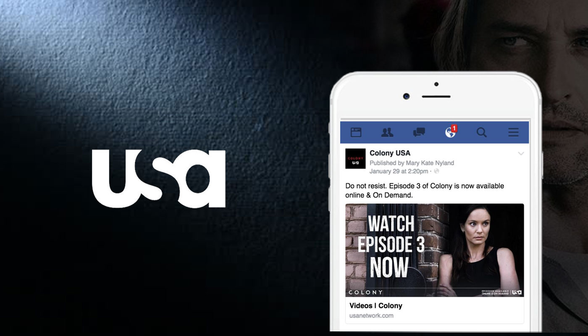
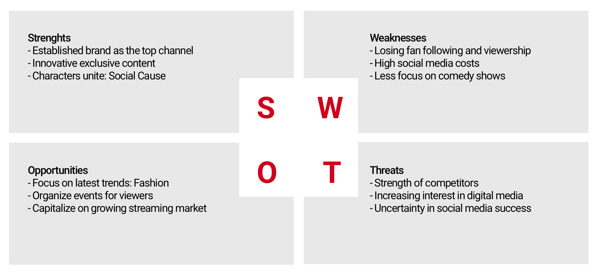
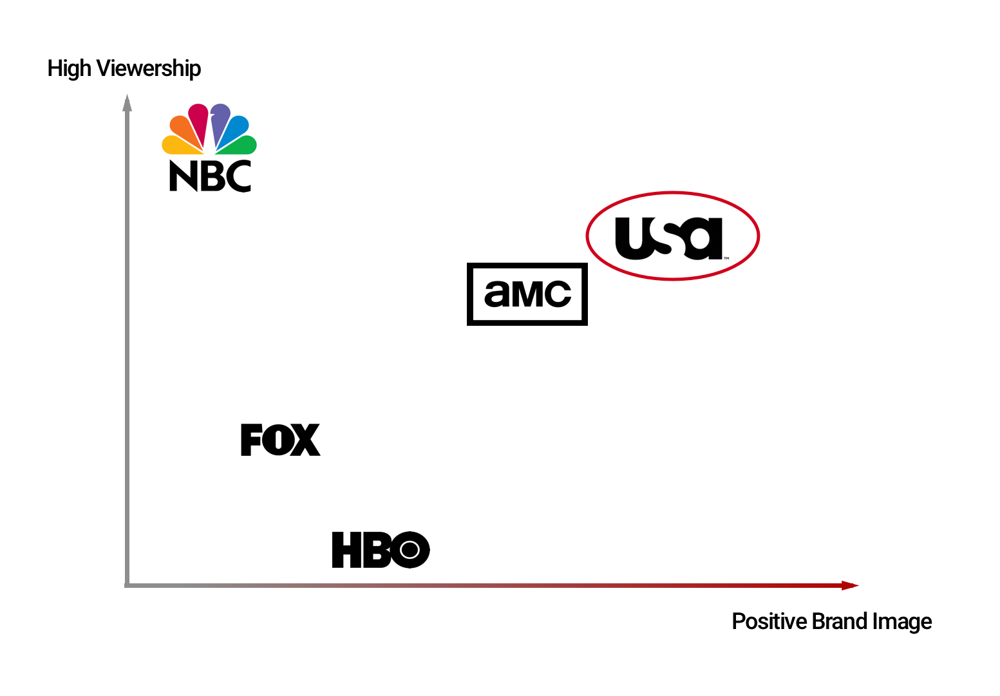
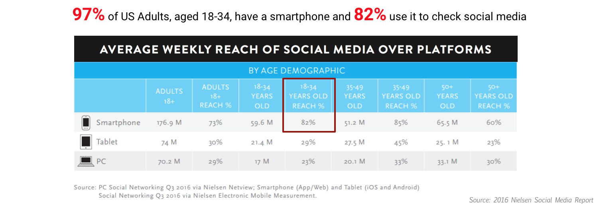
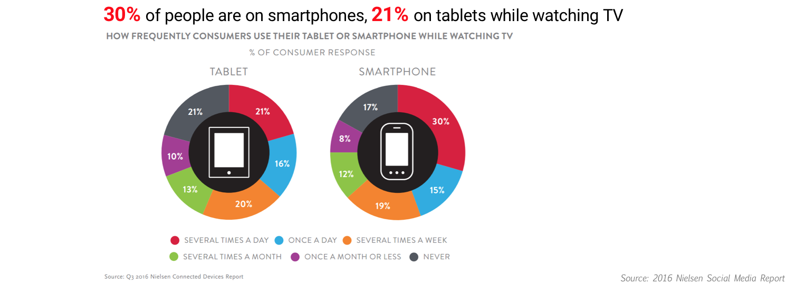
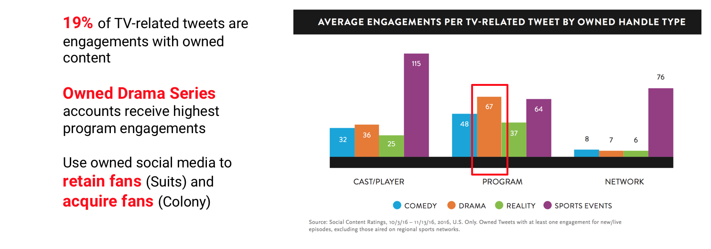
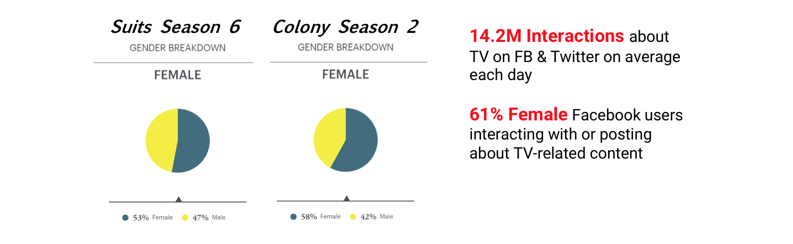
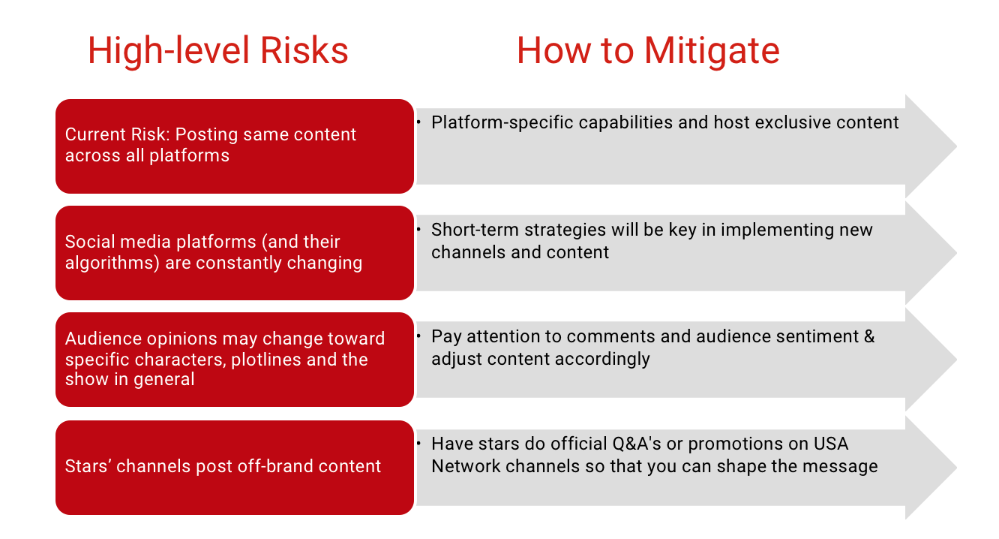

Scope
6 Persons Team
Role
Data Analyst Lead
Skills
Data Clean
Data Interpretation
Benchmark Creation
Persona
Programming R
Tabuleau
Client
USA Network
1.1 Project Overview
The USA Network project is a project that helps our client find best social media marketing practices for two of their shows - Colony and Suits. We realized our goals by:
- Reviewing and analyzing data from Facebook, Twitter, and Instagram for Colony and Suits for patterns, trends, and interesting findings.
- Utilizing additional tools like Kairos, Google Analytics, Comscore, and Brandwatch to discover and share findings that USA Network may not be familiar with.
- Completing content audits of organic and paid content for both shows.
- Identifying major takeaways ad providing recommendations that may help inform future campaigns.
Our Tasks
Examine the audiences, social history & media plans of Colony and Suits and:
- Discover the ROI on social media marketing and why this matters for USA Network and these two shows.
- Audit organic and paid posts for each show to determine how best to optimize social spend and reach.
- Define best practices and recommendations for USA Network’s future social media campaigns
2.1 Competitive Analysis
About USA Network
- Main audiences: 20's - 50's
- Ranked among the top five basic cable channels for viewing popularity
SWOT Analysis
Positioning Strategy
2.2 The Importance of Social Media
1. USA Network’s target audience more connected than ever to social media.
2. Big vs. Little Screen: The battle for audience attention
3. Owned content receives strong engagement on Twitter
4. #GirlPower: Women are key social influencers for both shows
2.3 Content Analysis for Suits and Colony
2.3.1 Suits Season 6: Content Analysis
Key Findings
- Videos are most interacted with for both Paid & Organic content.
- Posts centered around Donna & Harvey gets most eyeballs.
- Posts centered around Harvey, Jessica & Donna gets most user interaction.
- Harvey & Mike’s pairing is most popular in both organic and paid content.
- User interaction spikes every Tuesday for paid content & Friday for Organic content.
2.3.2 Colony Season 1: Content Analysis
Key Findings
- Suits senson 2 got strong impressions but lower engagement across Facebook.
- Patterns on Kairos indicate that audiences are active on social media when new episodes are released.
- People like to talk about expectations – Future posts should maintain excitement about what is coming.
- Videos Length between 30-35s has higher engagement and views.
- Average user interaction is maximum for content posted at 3:00 pm and 9:00 pm
- The Star Power is contributing to the overall traffic.
3.1 Key Recommendations
Key Recommendations are:
- Utilize Snapchat as a platform for social medai campaign. (1) Snapchat’s demographics are changing.
- Align your social media posts with trending topics. Reach users organically using relevant trending #hashtags and character memes.
- Use Facebook/Instagram Live stories to inspire your audience. You can do behind the scenes, Q&A, and live chats.
- Timing can impact engagement with owned Drama Series tweets. We found that 15-30 minutes after program ends receive hightest enegagement from owned accounts.
3.2 Risks & Key Takeaways
Risks and how to matigate them
key Takeaways
- Social media is an important communication tool for USA Network’s target audience.
- For Suits: Maintain fan base with a mix of organic and paid posts that feature character-specific content (videos recommended) and continued personalized responses/interactions to fan comments.
- For Colony: Acquire new fans through meaningful content about the show’s plotlines, making use of show’s stars and their followers and featuring engaging videos. Paid content will help grow this online community since it’s a newer show.
- Amplify organic content by using new platforms (e.g., Snapchat), star power and channel-exclusive posts.